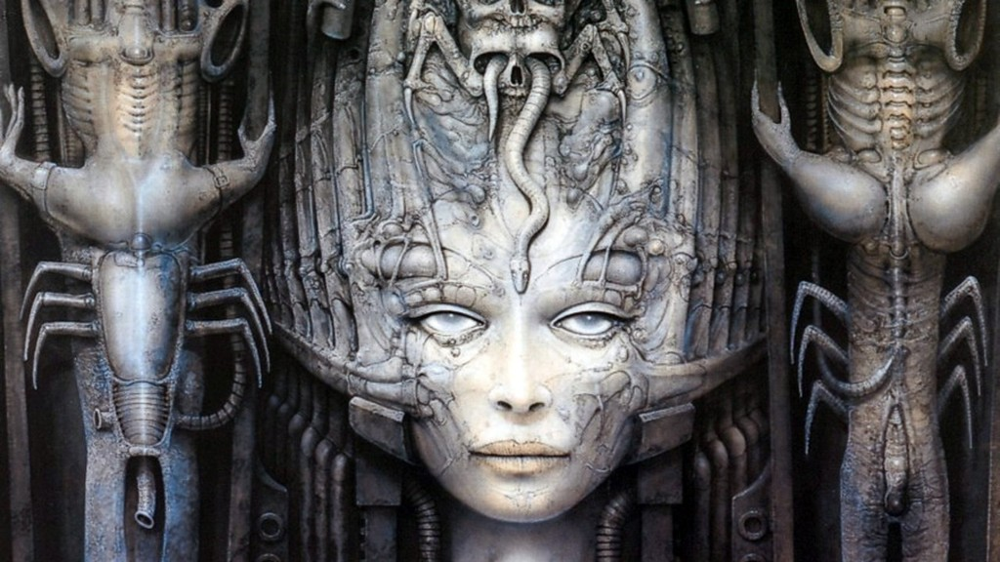

DOS is a platform-independent acronym for Disk Operating System.
Commands
| BREAK | Controls the handling of program interruption with Ctrl+C or Ctrl+Break. |
|---|---|
| CHCP | Displays or changes the current system code page. |
| CHDIR, CD | Changes the current working directory or displays the current directory. |
| CLS | Clears the screen. |
| COPY | Copies one file to another (if the destination file already exists, MS-DOS asks whether to replace it). (See also XCOPY, an external command that could also copy directory trees). |
| CTTY | Defines the device to use for input and output. |
| DATE | Display and set the date of the system. |
| DEL, ERASE | Deletes a file. When used on a directory, deletes all files inside the directory only. In comparison, the external command DELTREE deletes all subdirectories and files inside a directory as well as the directory itself. |
| DIR | Lists the files in the specified directory. |
| ECHO | Toggles whether text is displayed (ECHO ON) or not (ECHO OFF). Also displays text on the screen (ECHO text). |
| EXIT | Exits from COMMAND.COM and returns to the program which launched it. |
| LFNFOR | Enables or disables the return of long filenames by the FOR command. (Windows 9x). |
| LOADHIGH, LH | Loads a program into upper memory (HILOAD in DR DOS). |
| LOCK | Enables external programs to perform low-level disk access to a volume. (MS-DOS 7.1 and Windows 9x only) |
| MKDIR, MD | Creates a new directory. |
| PATH | Displays or changes the value of the PATH environment variable which controls the places where COMMAND.COM will search for executable files. |
| PROMPT | Displays or change the value of the PROMPT environment variable which controls the appearance of the prompt. |
| RENAME, REN | Renames a file or directory. |
| RMDIR, RD | Removes an empty directory. |
| SET | Sets the value of an environment variable; without arguments, shows all defined environment variables. |
| TIME | Display and set the time of the system. |
| TRUENAME | Display the fully expanded physical name of a file, resolving ASSIGN, JOIN and SUBST logical filesystem mappings.[3] |
| TYPE | Display the content of a file on the console. |
| UNLOCK | Disables low-level disk access. (MS-DOS 7.1 and Windows 9x only) |
| VER | Displays the version of the operating system. |
| VERIFY | Enable or disable verification of writing for files. |
| VOL | Shows information about a volume. |
Piping
Because DOS is a single-tasking operating system, piping is achieved by running commands sequentially, redirecting to and from a temporary file.
command < filenameRedirect standard input from a file or devicecommand > filenameRedirect standard output, overwriting target file if it exists.command >> filenameRedirect standard output, appending to target file if it exists.command1 | command2Pipe standard output from command1 to standard input of command2command1 ¶ command2Commands separated by ASCII-20 (¶, invoked by Ctrl+T) are executed in sequence (chaining of commands)
DosBox
To refresh the mounted folder, use rescan.To mount a folder from the host computer:
mount c ~/path/to/folder C:
To add a new folder to your PATH:
SET PATH=%1;C:\TC
Turbo C
To work with multiple files with Turbo C, you need to create a *.PRJ file with the name of the files to be included in your project, and set this filename under the Project menu.
MAIN.C INCLUDE.C EXTRAS.C
Turbo C also comes with a terminal util to compile outside of the IDE:
SET PATH=%1;C:\TC DEL UXNEMU.EXE TCC.EXE -ml -IC:\SRC src\UXNEMU.C UXNEMU.EXE ROMS\SCREEN.ROM
VGA stands for Video Graphics Array, sometimes referred to as Video Graphics Adapter.
It offers many different video modes, from 2 color to 256 color, and resolutions from 320x200 to 640x480. These notesfocus on the 256-color mode, known as mode 0x13. In mode 0x13, the screen dimensions are 320 pixels in width and 200 pixels in height. Since this is a 256-color mode, each pixel represents one byte, so the memory needed is 320*200 or 64,000 bytes.
#define 256_COLOR_MODE 0x13
#define TEXT_MODE 0x03
void
set_mode(Uint8 mode)
{
union REGS regs;
regs.h.ah = 0x00;
regs.h.al = mode;
int86(VIDEO_INT, ®s, ®s);
}
Pixels
The variable offset must be an unsigned short data type (16 bits with a range from 0 to 65,535) because the size of memory needed for mode 0x13 is 64,000 bytes. Using an unsigned short data type helps insure that we won't accidently write to an area of memory that isn't part of the video memory, which might cause our program to crash.
Uint8 *VGA = (Uint8 *)0xA0000000L;
#define SCREEN_WIDTH 320 /* width in pixels of mode 0x13 */
#define SCREEN_HEIGHT 200 /* height in pixels of mode 0x13 */
void
plot_pixel(Uint16 x, Uint16 y, Uint8 color)
{
VGA[y * SCREEN_WIDTH + x] = color;
}
Palette
To set one color in the palette, write the color index to port 0x3C8 and then write the red, green, and blue values, in order, to port 0x3C9. The VGA only gives us 6 bits per color channel.
void
set_color(Uint8 id, Uint8 r, Uint8 g, Uint8 b){
outp(0x03c8, id);
outp(0x03c9, r >> 2);
outp(0x03c9, g >> 2);
outp(0x03c9, b >> 2);
}